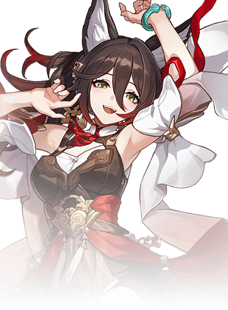

Tingyun es un personaje de Honkai: Star Rail y una comerciante de la flota Xianzhou Luofu. Es la líder comercial del Alcance de Aurum, conocida por su carisma y habilidades diplomáticas. Aunque parece encantadora y persuasiva, sus verdaderas intenciones a veces son ambiguas.
En términos de personalidad, Tingyun es encantadora, confiada y manipuladora en ocasiones, sabiendo cómo usar su encanto para obtener lo que quiere o cerrar negocios provechosos. Sin embargo, a pesar de su apariencia agradable y su comportamiento cortés, hay cierta ambigüedad sobre sus intenciones, lo que hace que los jugadores estén atentos a sus verdaderas motivaciones.
Tingyun termina por sufrir un destino trágico durante los eventos en la Xianzhou Luofu. Se revela que Tingyun es poseída por un Fragmentum del Abundancia, lo que la convierte en una marioneta del enemigo conocido como el Señor del Abundancia, quien usa su cuerpo para infiltrarse y causar caos en la flota Xianzhou.
Esta posesión la lleva a actuar de forma manipuladora y peligrosa, lo que culmina en su muerte tras ser descubierta. El personaje principal y sus aliados intentan detenerla, pero el control del Señor del Abundancia es demasiado fuerte, lo que resulta en su sacrificio. Su trágico destino afecta emocionalmente a varios personajes y es un giro impactante en la trama de la flota Xianzhou.
Introduccion al personaje
Con su apariencia refinada y un abanico como arma, Tingyun se presenta como alguien encantadora y sofisticada. Sin embargo, bajo esa fachada de cortesía, hay una ambigüedad que deja entrever que podría haber motivaciones ocultas en sus acciones. Como personaje jugable, destaca por su rol de soporte de tipo Rayo, potenciando a sus aliados en batalla con buffs que incrementan su ataque y eficiencia.
